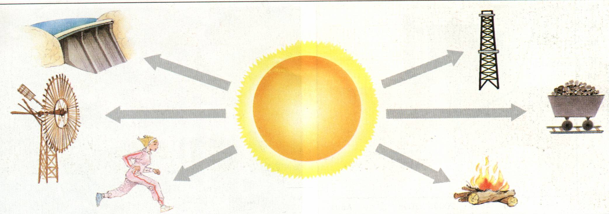

Las energías renovables son clave para reducir la dependencia de los combustibles fósiles y mitigar el cambio climático. Al utilizar fuentes de energía como la solar, eólica, hidroeléctrica y geotérmica, podemos reducir las emisiones de gases de efecto invernadero y disminuir la contaminación del aire y el agua. Además, estas fuentes son inagotables y pueden generar empleo en sectores como la instalación y mantenimiento de infraestructuras renovables.
1. Son inagotables
La mayor parte de estas energías limpias son prácticamente inagotables. Varias provienen de fuentes que han estado presentes por millones de años (el sol, energía geotérmica) y otras se encuentran presentes en enormes cantidades (viento y mar). Y por su misma existencia tan abundante, sus beneficios llegan a más gente alrededor del mundo.
2. Son sustentables
El uso de energías renovables, en combinación con fuentes convencionales, permiten satisfacer nuestras necesidades energéticas actuales. Sin embargo, la importancia de ellas es que ayudan a garantizar el bienestar del planeta y de las futuras generaciones. Además podrán seguirse aprovechando durante largos periodos de tiempo y siendo más productivas con el paso de los años.
3. Reducen la emisión de gases de efecto invernadero
De 1992 a la fecha (2024), las emisiones de CO2 han crecido en un 60%; un crecimiento alarmante que pone en peligro la vida en el planeta tal como la conocemos. En la reciente Conferencia del Cambio Climático de las Naciones Unidas (COP26), se refrendó el compromiso de la mayoría de las naciones para dejar el balance de gases de efecto invernadero en cero para el 2050 (objetivo conocido como Net Zero). De igual manera se buscará reducir el incremento de la temperatura mundial para que no rebase los 1.5°C. Para cumplir estos objetivos, el reemplazo de combustibles fósiles por energías renovables juega un papel crucial.
4.Se pueden producir localmente
A diferencia de fuentes como el petróleo y gas, que muchas veces tienen que viajar miles de kilómetros para llegar a su destino, muchas fuentes renovables se encuentran disponibles en nuestras propias comunidades e incluso en nuestros jardines o azoteas. Así por ejemplo, es cada vez más común ver el montaje paneles solares para casa por doquier o turbinas eólicas domésticas.
5. Generan empleos y activan la economía
En 2012, la Agencia Internacional de Energías Renovables estimaba que la industria de energías limpias daba trabajo a más de 7.3 millones de personas en todo el mundo. Para 2020 ese número se encontraba en 12 millones. Es entonces claro que la demanda por energías renovables seguirá en crecimiento durante las siguientes décadas. Además, muchas de estas fuentes de energía aún se encuentran subutilizadas, por lo que podemos esperar una mayor generación de empleos de manera directa e indirecta alrededor del mundo.
6. Cuentan con el apoyo de gobierno
la gran mayoría de los países, los gobiernos federales y locales promueven el uso de energías limpias mediante subsidios, reducción o condonación de impuestos. Con el objetivo de cumplir con la iniciativa Net Zero, podemos esperar que juntos, gobierno y particulares, colaboren para que sea cada vez más fácil el empleo de energías sustentables.
7.Mejoran el aire que respiramos
nadie es un secreto que las energías no renovables son grandes agentes de contaminación. De acuerdo a un estudio de The Lancet , en 2019, 6.7 millones de personas murieron por causas relacionadas con contaminantes en el aire. Y la Organización Mundial de salud afirma que 99% de la población mundial respira aire que excede los límites de polución recomendados. Ante este panorama, el uso de energías renovables representa la alternativa ideal para mejorar la calidad de aire que respiramos.
8.Han alcanzado sus costos más bajos en la historia (y seguirán bajando)
energías renovables se encuentran en su máximo punto de eficiencia en cuanto a la generación de electricidad se refiere. Cada vez generan más electricidad y a menor costo. Esto es el resultado del trabajo en conjunto de iniciativa privada, gobiernos y una mayor demanda del mercado. ¿Y lo mejor? Esa eficiencia invariablemente seguirá creciendo, traduciéndose en más ahorros para los consumidores. Revisa esta tabla comparativa.
